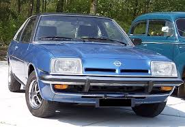

Modell: Opel Kapitän
Baujahr: 1938-1970
Produktionsstückzahl: 200.000+
Motor: 2.5L I6
Leistung: 75 PS
Höchstgeschwindigkeit: 150 km/h
Modell: Opel Rekord
Baujahr: 1953-1986
Produktionsstückzahl: 2 Millionen+
Motor: 1.5L I4
Leistung: 60 PS
Höchstgeschwindigkeit: 145 km/h
Modell: Opel Admiral
Baujahr: 1964-1977
Produktionsstückzahl: 130.000+
Motor: 2.6L I6
Leistung: 120 PS
Höchstgeschwindigkeit: 160 km/h
Modell: Opel GT
Baujahr: 1968-1973
Produktionsstückzahl: 103.000+
Motor: 1.1L I4
Leistung: 60 PS
Höchstgeschwindigkeit: 180 km/h

Modell: Opel Manta
Baujahr: 1970-1988
Produktionsstückzahl: 500.000+
Motor: 1.6L I4
Leistung: 80 PS
Höchstgeschwindigkeit: 170 km/h